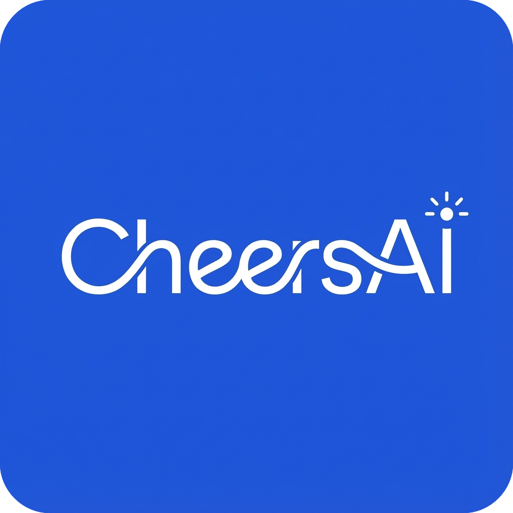

数据需求智能分析助手
Wren 语义层实测 · 静态演示回放 · MDL 口径字典 · 受控 NL→SQL
实时状态
正在加载本地实测回放数据（源自 Wren MCP 真实执行结果固化）…
静态演示
语义层 · MDL 字典
演示回放
以 Wren AI MDL 为基准：表、字段含义、业务口径（枚举）、表间关系写成 AI 可读的字典；未建模字段对 AI 不可见。本页数据为本地实测回放：由 Wren 引擎 get_manifest 真实结果固化（演示数据）。
1 建模
2 校验
3 被查询引用
语义引擎状态
Wren Engine · MCP · dry-plan
语义规则
knowledge/rules · 生成硬约束
关系与枚举
表间关系 + 状态码值口径
MDL 模型资产
模型 / 字段可见性 / 计算口径 / 关系
数据源接入
演示数据
业务数据库经 Wren Engine（ibis / Apache DataFusion）接入，22+ 数据源统一方言。下方为本环境真实测试库已建模的 6 张表及其行数（演示）（由本地库 COUNT 实时统计）。
1 连接
2 采集
3 已建模可见
业务数据库接入
Wren Engine 只读探测
接入的表结构与数据字典
行数（演示） · 字段级含义
业务需求分析 · SQL 生成
回放执行
输入自然语言 → 业务语义分析 → MDL 语义对齐（引用可见对象）→ 确认 → 经 MDL dry-run 门禁 → Wren query 真实执行（落本地测试库）。当前 NL→SQL 规划器基于 MDL 确定性映射；静态演示版回放本地实测结果（演示数据）。
1 语义分析
2 MDL 对齐
3 确认
4 dry-plan 门禁
5 结果回放
业务需求分析输入
开始业务语义分析
SQL 联调 · 交付
回放只读
直连测试库反复联调，结果可视化核查确认，通过后导出生产环境 SQL 脚本。所有 SQL 经 Wren 语义层规划 + 只读保护后回放执行（仅允许 SELECT / WITH）· 演示数据。
1 编写 SQL
2 语义门禁
3 回放执行
4 导出交付
测试数据库直连
联调专用 · 只读
已支持的语义层对象
可直接用于 SQL
SQL 联调与导出
执行联调（只读 · 经语义层）
导出 SQL 脚本
开源组件选型 · 扩展性架构
本链路以 Wren AI 语义层为基准，其余环节参考成熟开源组件做"可插拔"设计：Text2SQL 引擎、SQL 审查、元数据采集、文档知识、执行引擎均可按场景替换或互补。
可插拔架构总览
每一层都标注「已用 / 可选替换」
说明：实线框为当前实测已落地组件；虚线框为可选替换 / 互补组件。语义层（MDL）是中枢——所有 SQL 生成与执行都围绕它做受控规划。
替换 / 互补关系速查
处理中…
正在回放本地实测数据（演示模式）